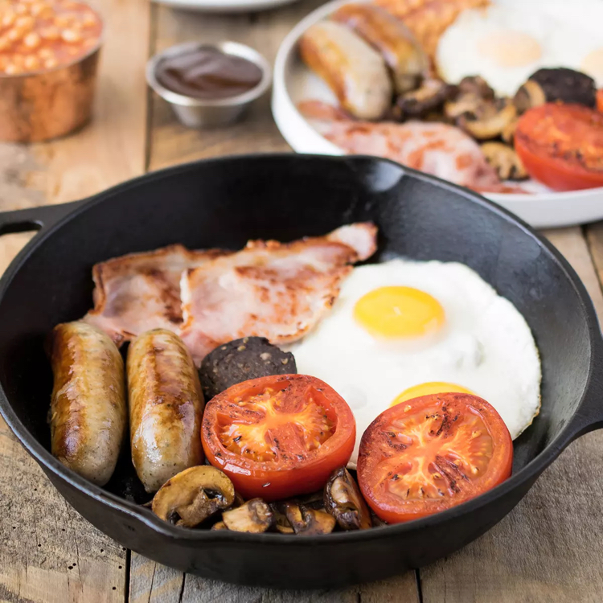

Full English Breakfast Recipe

We get a lot of visits from our American, Canadian
and Australian cousins who frequently ask us how
to make a proper English breakfast and about the
right ingredients, so we created this full English
breakfast recipe just for you, we British probably
already know how to make it.
Ingredients
- 4 pork sausages
- 6 strips of back bacon
- 4 eggs
- 1 tomato
- 2 cups of mushrooms
- 1 can of baked beans
- 200g of black pudding
- Tea or Coffee
- Freshorange juice
The Recipe
- The first thing to do is grill your bacon, that
will take the longest and grilling it under 200
degrees, turning it occasionally will make sure
it cooks evenly on both sides. Cut notches in the
fat so it doesn't curl up when it cooks, making it
more difficult to crisp up the fat.
- Next you need to start frying your bread.
Fried bread is one of the English breakfasts
dirty little pleasures because its so greasy,
but fried bread is brilliant with a fried egg
on top and makes your breakfast deliciously
crunchy. Fry two slices and put them on a plate
to stay warm near the grill.
- Once your fried bread is done, now start frying
your tomatoes and mushrooms. They only need
to be lightly fried before being put on the hot
plate with your fried bread to await breakfast
assembly.
- Now start cooking your sausages and black
pudding, you can fry them in the same pan and
they need to be fried evenly and well to make
sure they are both cooked inside and out.
- Before your sausages are done cooking, put the
other two pieces of bread in the toaster or
under the grill. When they are toasted, put
them on the hotplate with the other waiting
ingredients.
- When you put your toast in is a good time to
start cooking your baked beans, they usually
just need to be heated up and you can do that
in 2 minutes in a microwave or in a small
pan on the stove. We like to serve them in
a little pot so that they do not spread
- When your sausages and black pudding are
ready, assemble all of the ingredients on
their final plates for serving. Plates should
be large enough to hold all the ingredients
of a full English breakfast comfortably
without everything feeling cramped.